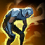
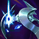
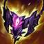
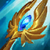
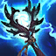
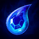
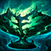
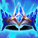
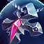
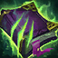

These are the summoners, runes & items that I run every game. Updated always to the most recent builds.
Summoners
Runes
Items
Summoner Spells
Flash every game; choose Teleport or Exhaust for slot two
Slot 1 - Mandatory
Flash
Always take Flash. This is not negotiable. Hwei needs this for added safety as his kit has zero mobility. It's the best summoner spell in the game hands down.
Plus
Second Summoner Slot
Pick one
Teleport
Default choice. Take this unless you need exhaust to survive enemy all-in/dive threats.
Default

Exhaust
Take this into dive/assassin comps and incredibly difficult all-in bot matchups (check matchup tab for specifics).
Defensive
Runes
Rune pages & When to take them
Rune Synergy Notes
Hwei's rune pages are mostly about taking the strongest runes we possibly can. For instance, while both scorch and gathering storm are viable, gathering storm is generally the better rune (higher winrate). As a general rule, we select the best runes which give us the strongest stats (runes these days are literally just stats).
CometBest rune overall. Does the most damage and effective when you can hit poke from long range.
AeryBest when enemies must walk into your range often and you can proc aery consistently.
Early GameEarly game page is most effective when winning lane decides the game. Matchups tab has more info on this.
Recommended Page
Recommended Comet
Default Hwei rune page. Generally just the strongest runes you can take outside of special circumstances. Run this in 80% of games.
Stat Shards
Use When
Swap If
Items
Build paths & when to run them
Item Synergy and Build Logic
Hwei builds depend on what the game requires. Haste builds make you useful even when behind because you can cycle utility more often. Penetration and burst builds are strongest when enemies are squishy. If you fall behind, prioritize ability haste and percentage penetration.
CDR / utilityBest from behind or into longer fights against tanky comps where you need many spell rotations.
Pen / damageBest when enemies are squishy, you are even or ahead, and enemies die to 1 combo.
Defensive APDefensive builds tend to be weaker from behind as you already struggle for damage when low on gold.
League Client Import
Copy an item set, then paste it in Collection > Items > Import Item Sets.
Doran's Ring
The only proper starting item. Provides insane stat-value. Don't sell until ~20min into the game.
2 Health Potions
Start popping a potion early if you expect to be fighting frequently in lane.
Warding Totem
Swap to Farsight after level 9 or when lane swap happens.
Never change these starting items. These days, Doran's items are so overpowered that even in sleeper lanes, it's still worth running.
Damage
Sorcerer's Shoes
Default boots. They provide strong early damage. Swap if you fall behind or enemy team has significant magic resist.
Haste
Ionian Boots
Alternative when conditions for Sorcerer's aren't met or you are enchanter build. These boots are very stat efficient.
Buy boots after your first item. The only exception is enchanter build (buy lucidity boots after 3rd item).
1st Core
Blackfire Torch
Strongest early game mana item (for almost all mages). Excellent stats, waveclear, and damage.
2nd Core

Cosmic Drive
7 seconds of movespeed applied from torch's burn effect. Provides some much needed early CDR.
3rd Core

Shadowflame
Provides more damage 3rd item than any other (including Rabadon's). Build 2nd against really squishy enemies and pivot to pen build. Skip against tanky enemies.
Standard build path for Hwei. Could be utilized in all games without too much of a problem. It's the most generic build and provides high amounts of damage and CDR.
1st Core

Seraph's Embrace
Greediest starting item with the best base stats. Starts off very slow though. Shield is most effective versus bruiser dive compositions.
2nd Core
Liandry's Torment
Adds percentage max health burn damage. Very effective at killing tanks but has a poor stat profile.
3rd Core
Cosmic Drive
Ideal third item here due to Liandry's providing 7 seconds of Cosmic Drive movespeed. Ability Haste allows us to cycle spells, constantly proccing Liandry's.
This build is strongest against dive comps (seraphs) who have higher HP enemies (Liandry's burn). This is typically against Bruisery dive comps (not assassins).
1st Core
Blackfire Torch
Strongest starting item (best stats). Could be swapped for Seraph's but only if you are okay with a weaker early-game.
2nd Core
Shadowflame
Mathematically highest damage item in this slot. Must buy.
3rd Core

Stormsurge
Purchased almost exclusively for the added 15 magic pen. 6% Movespeed is also a nice stat bonus.
Only a good build into 4-5 squishy enemy champions. Ideally 4-5 enemy champions who are all ranged. This build enables you to 1-shot targets with 2-3 spells on 2-3 items (no ultimate needed). Always buy Sorc boots after first item. Typical 4th/5th items are Void/Rab.
Start Stacking

Tear of the Goddess
Early mana stacking that prevents us from going OOM in lane. Only downside is 400 gold on 0 combat stats.
Burn
Liandry's Torment
Adds percentage max health burn damage. Very effective at killing tanks but has a poor stat profile. Very stat-inefficient though.
Damage = Healing

Echoes of Helia
Provides stronger stats than Diadem. It's damage converted to Healing effect is the entire reason this build works.
Dumping Healing Proc

Diadem of Songs
Solely exists to dump Helia healing every second. Damage = Healing with this build on a 1 second CD.
Use this build in roughly 10% of games. Check pinned comment on this video for additional context: https://www.youtube.com/watch?v=UjsHX5qirXA
Typical 4th/5th items are Cosmic Drive & either Cryptbloom or Bloodletter's. This maximizes CDR and utility.
Luxury
We build these items ONLY when we don't need the items under the Intentional category. These items are greedy, and serve a function that isn't necessary for us to play the game. In other words, we can be useful without them, though it may be challenging.
Maximum Damage
Rabadon's Deathcap
High-AP item to build after core build. Luxury item with expensive components.
Damage + Pen
Shadowflame
Burst option into squishy teams when you are ahead or even.
Spell Shield

Banshee's Veil
Defensive AP option when enemy has threatening skillshot. Examples include hooks, skillshots, Syndra E, etc.
Stasis
Zhonya's Hourglass
I build sparingly into unavoidable dive and heavy burst (so basically Rengar).
Intentional
These items provide very specific functions. When you meet the conditions for these items, you must buy them immediately. Note that magic penetration becomes gold efficient when enemies have significant magic resistance, and becomes gold efficient every game 4th-5th item due to magic resistance base values.
Pen
Void Staff
Default pen item. Buy when you don't meet conditions for Cryptbloom and Bloodletter's.
Utility Pen
Cryptbloom
Penetration option when you: don't go pen build, don't meet criteria for Bloodletter's, and have less than 70 haste.
Shred
Bloodletter's Curse
Build with multiple useful AP champions on your team. Don't build with pen build OR into really squishy enemy comps.
Anti-Heal

Morellonomicon
If you need anti-heal, buy oblivion orb. Only finish the Morellonomicon last item (super stat inefficient).